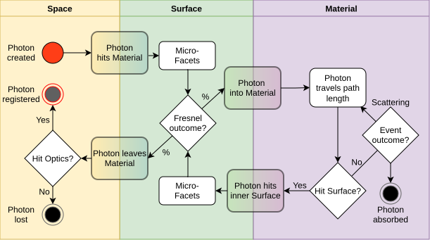

An interactive 2D Monte Carlo simulation - to uncover Signal Interference from Surface Interactions (SISI)
A terrestrial laser scanner can measure distance by timing a laser pulse and evaluating its round trip to the target. Although this underlying principle applies to both pulse and phase-based systems, this article focuses on the mechanics of pulse-based laser scanners. The implicit assumption is that the pulse reflects off the surface, a clean, sharp event. But most real-world materials are not mirrors. Photons penetrate into the material, scatter around inside, and only then re-emerge. The extra path they travel causes the scanner to report a distance that is systematically too long. How much too long depends on the material's optical properties, the incidence angle, the surface roughness, the wavelength; a bunch of parameters that is difficult to learn about from measurements alone.
To isolate these effects, I shifted from the macroscopic notion of an energy wave to the quantisation into discrete energy packets. Physically, the laser pulse of the MS60 is a collection of individual photons. Based on the wavelength and pulse energy of the instrument, a single measurement pulse consists of approximately 2.8 billion ($2.8 \cdot 10^9$) photons. In the Monte Carlo simulation, the law of large numbers is exploited: each simulated photon acts on one possible path of the laser–material interaction. The statistical accumulation of all events in the imagined detector reconstructs the expected continuous signal (waveform).
The modular structure of the simulation environment helps to represent the individual processes of the laser–material interaction. Independent of instruments and their manufacturers, the goal is to reveal the effects that are generally responsible for the distance errors in electronic distance measurement. Beyond distance, the simulation also reconstructs the return intensity, a quantity that carries its own material signature and that is used in recent radiometric research. Analogous to the TLS equation (Wagner 2006), it is necessary to examine the physical processes behind the result in order to develop an understanding of the problem and its solution.
Note: The interactive 2D simulation on this page is intended solely for illustrative purposes. The reference implementation of SISI — a validated C++ Monte Carlo simulator accompanying my dissertation — is published under the GPLv3 licence at github.com/FinnLinxxx/sisi-simulator. Unlike the reference code, this browser-based visualisation shown here makes no claim of physical correctness or completeness.
A photon moves through three domains before it is either absorbed in the material, thrown back toward the photodiode, or is lost forever. The rules by which a photon is created and subsequently traverses the simulation follow strictly the underlying physical order.

Space describes the transmission path between the instrument and the material surface. The space between sensor and object is treated as a homogeneous medium with a constant refractive index of $n_\text{air} = 1.00028$. Each photon is assigned an individual starting state to simulate the physical extent of the laser pulse: the emission time $t_0$ follows a Gaussian distribution ($t_0 \sim \mathcal{N}(0, \sigma_t^2)$), and the direction vector deviates from the ideal optical axis within a cone defined by the divergence angle, producing the spot size $\sigma_{xy}$ on the surface. After initialisation, the photon moves on a ballistic trajectory until it intersects the surface.
Surface is the physical-mathematical boundary that decides whether incoming radiation is reflected or transmitted into the material. This applies reciprocally, both for arriving radiation and for that which is thrown back out of the material (ex. Total Inner Reflection - TIR). The direction in which a photon is reflected or refracted is determined by the microfacet structure. Whether it reflects or refracts is governed by the Fresnel equations, through the material parameters, the angle of incidence, and the polarisation direction.
Volume is the material interior. Photons that have entered the solid are strongly influenced by absorption and scattering. The interaction of laser light within matter is primarily determined by the ratio of scattering ($\mu_s$) and absorption ($\mu_a$). A material entirely without scattering (such as glass) would be completely unsuitable for TLS, since no signal from the material interior would reach the photodiode due to the lack of backscattering. When $\mu_s > 0$, the penetrated photons traverse a zigzag path through multiple scattering events.
A distinction is made between a macroscopic and a microscopic view of the surface. Macroscopically, the incidence angle results from the direction of the laser beam and the orientation of the surface. Microscopically, each photon is considered individually, and its interaction with the surface is described by a local microfacet normal. The microfacets are small, mutually tilted, planar sub-faces that represent the roughness of the surface. Their tilt angle $\gamma$ relative to the macroscopic surface normal $\hat{n}_\text{surf}$ follows a distribution. Empirically assumed as a Gaussian with the variance $\sigma_\text{rough}^2$:
$$\gamma \sim \mathcal{N}(0,\; \sigma_\text{rough}^2), \qquad \varphi \sim \mathcal{U}(0,\, 2\pi)$$At each facet, the Fresnel equations determine the reflectance. For a given polarisation angle $\Psi$:
$$R(\Psi) = \cos^2(\Psi)\, R_s + \sin^2(\Psi)\, R_p$$where $R_s = |r_s|^2$ and $R_p = |r_p|^2$ are the squared magnitudes of the Fresnel coefficients for s- and p-polarised light. The two fractions are interpreted as probability and counter-probability: $R(\Psi)$ is the probability that the photon is directly reflected at the surface, $T(\Psi) = 1 - R(\Psi)$ the probability that it transmits into the other medium. When a photon collides with the surface, a random number $u \sim \mathcal{U}(0,1)$ is drawn if $u < R(\Psi)$, the photon reflects; otherwise it transmits (and is now inside).
Photons moving through matter are influenced by the electric fields and particles within it. This effect is magnitudes stronger in a solid than in the atmosphere. Two coefficients describe what happens: the absorption coefficient $\mu_a$ and the scattering coefficient $\mu_s$, both given in $\text{mm}^{-1}$. Their reciprocals are the mean free paths, the average distance a photon travels before it is absorbed or scattered, respectively. Combined into the total interaction coefficient $\mu_t = \mu_a + \mu_s$, the probability density for the free path length follows an exponential distribution analogous to the Beer–Lambert law:
$$p(\ell) = \mu_t \, e^{-\mu_t \, \ell}$$After the first entry or between two events, most free path lengths are relatively short. Longer, unaffected stretches are rarer but distort the mean considerably. At each interaction event, the photon is either absorbed (with probability $\mu_a / \mu_t$) or scattered into a new direction. The new direction is sampled from the Henyey–Greenstein phase function with anisotropy parameter $g$:
$$p(\cos\theta) = \frac{1 - g^2}{\bigl(1 + g^2 - 2g\cos\theta\bigr)^{3/2}}$$The factor $g \in [-1, 1]$ says how much a photon remembers its previous direction: $g = 0$ means isotropic scattering, $g > 0$ forward-scattering (common in biological tissue and wet wood), and $g < 0$ preferential backscattering. Because a high $g$ means each individual scattering event barely deflects the photon, many more events are needed before the direction is fully randomised. This coupling between $\mu_s$ and $g$ is captured by the reduced scattering coefficient $\mu_s' = \mu_s(1 - g)$, — two materials with different $\mu_s$ and $g$ but the same $\mu_s'$ end up looking very similar in terms of diffuse transport.
Absorption, by contrast, does not affect the travel time. Absorbed photons are simply lost for detection. So absorption is mainly a question of signal strength, while scattering is what causes the distance error. Each scattered photon accumulates a total path length inside the material as the sum of its individual free path segments: $s_\text{mat} = \ell_1 + \ell_2 + \cdots + \ell_n$. Because light travels slower in the material than in air ($c/n_\text{mat}$ instead of $c/n_\text{air}$), the scanner, which assumes the photon travelled through air the entire time, interprets this extra time as additional distance. The systematic distance error for a photon with material path length $s_\text{mat}$ is:
$$\Delta s = s_\text{mat} \cdot (n_\text{mat} - n_\text{air})$$The interactive simulation below implements the desribed above into a 2D Monte Carlo pipeline. Drag the emitter, change the sliders, and watch what happens. Three modes are available: Laserscanner sends a Gaussian beam onto a rough surface (the realistic measurement scenario). Material Impulse uses a Dirac pulse ($\sigma_{xy} = \sigma_t = 0$) with forced 100% transmission, isolating the pure material response from surface effects. Patterson places an isotropic point source at depth $z_0 = 1/\mu_s'$ inside the material, which can be checked against the analytical solution by Patterson et al. (1989).
The refractive index $n$ appears in three distinct places: the Fresnel coefficients at the boundary, the refraction angle (Snell), and the propagation speed $c/n$ inside the material. Glass sits around 1.5, water at 1.33, concrete somewhere between 1.5 and 1.7. A higher $n$ means more reflection at the surface and a slower photon inside, both amplify the distance error.
The two volume coefficients $\mu_a$ and $\mu_s$ are best understood together. $\mu_a$ is derived from the imaginary part $k$ of the complex refractive index ($\mu_a = 4\pi k / \lambda_0$) and removes photons from the simulation, a high value weakens the return signal. $\mu_s$, by contrast, depends on the microscopic structure of the material: grain boundaries, density fluctuations, optical inhomogeneities. It does not kill photons but redirects them. What matters for the distance error is their ratio: when $\mu_s \gg \mu_a$ (high albedo $\mu_s/\mu_t$), photons survive enough scattering events to accumulate a long zigzag path before escaping. When absorption dominates, most photons die before they scatter back out.
The anisotropy $g$ modifies what "a scattering event" actually means. At $g = 0$ each event randomises the direction completely. At $g = 0.85$ — typical for dry wood — the photon barely changes course at each event, so many more events are needed before the beam is fully diffuse. Together with $\mu_s$, this defines the reduced scattering coefficient $\mu_s' = \mu_s(1-g)$.
The surface roughness $\sigma_\text{rough}$ and the beam parameters $\sigma_{xy}$, $\sigma_t$ shape what happens before the photon enters the material. $\sigma_\text{rough}$ is the standard deviation of the microfacet tilt distribution, at zero the surface is a mirror, at higher values the reflected beam fans out and more photons transmit into the volume. $\sigma_{xy}$ defines the Gaussian spot size on the surface, $\sigma_t$ the pulse length. Typical TLS pulses extend about one metre in time (nanosecond pulse width), while the material-induced distance shifts lie in the sub-millimetre to millimetre range, picosecond-scale shifts that are too small to distort the pulse shape but large enough to bias the peak position.
The distance errors in terrestrial laser scanning are not artefacts of the measurement process, they are a physical consequence of photons entering the material. How far they penetrate, how often they scatter, and whether they make it back out depends on $\mu_s$, $\mu_a$, $g$, $n$, $\sigma_\text{rough}$, and the incidence angle. The Monte Carlo simulation traces these paths one by one, without needing to know anything about the instrument. Consequently, the insights derived from this simulation stay inherently instrument-independent - thus meeting one of the core goals of the dissertation.
The full SISI simulator is at github.com/FinnLinxxx/sisi-simulator (GPLv3, C++11, YAML-configured). If you work with laser scanning data (or in photonics or in material science) and want to test how your material behaves - try it out.